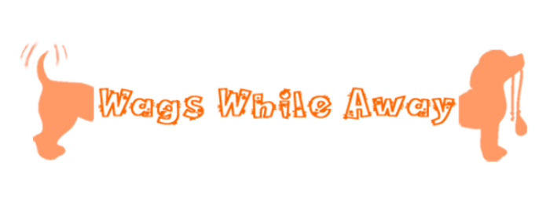

About

Jeremy Matthey is a senior at University of Arkansas at Little Rock, studying web development with an emphasis in graphic design. He has always had a propensity for technology and computers as well as artisticly expressing himself, so, of course, he felt right at home when he started the Web Development program at UALR. After he graduates, Jeremy hopes to create beautiful websites as well as design logos for professional and start-up companies. Since beginning the program at UALR, he has become employed as an equipment tech for the Arkansas Providers Coalition and has found it to be an invaluable experience.
Resume
809 Orange St, Apt #A
North Little Rock, AR 72114
Capabilities
- Proficient in coding with HTML and CSS
- Able to build and organize databases
- Manages many different projects at a time
- Knowledgeable on building Wordpress-based sites
- Expert in both Google and Microsoft cloud software, including Microsoft Word, Excel, Powerpoint, and Outlook as well as Gmail, Docs, Slides, and Google Drive
- Adapts quickly to new software and technology
- Innovative approaches to problem solving
Experience
Arkansas Provider's Coalition - Little Rock, AR - Current
Equipment Tech/IT/Training and Development
- Secures laptops and iPhones with VPNs to protect patient health information compliant with HIPAA regulations
- Trains new hires to correctly utilize equipment and software efficiently
- Orders, organizes, and tracks all hardware assets in circulation
- Solves IT related problems for care coordinators statewide
Domestic Domestic - Little Rock, AR - 2015-2018
Sales Support
- Maintained e-commerce site via Shopify for current and new products sold
- Managed all social media platforms (Instagram, Facebook, Twitter)
- Photographed products for marketing and e-commerce
- Met competitive sales goals
- Consistent excellence in customer service
Education
Louisiana Technical College - Ruston, LA - 2002-2003
University of Central Arkansas - Conway, AR - 2003-2007
University of Arkansas at Little Rock - Little Rock, AR - 2018-current
Download .doc version here
Cover Letter
Dear Sir or Madam,
Thank you for taking the time to consider me as a new addition to your team. I've taken great interest in your company and believe this would be a great environment to continue my career as a web developer and graphic designer.
I believe I have many valuable assets that would benefit your company's continued success. I'm proficient in HTML coding as well as CSS styling. I have a good eye for detail and design, and I am an overall team player.
Thank you in advance for reviewing my resume, and if there is anything you would like to further discuss, please reach out.
Sincerely,
Jeremy Matthey
Writing
Writing Samples
Progressive Enhancement
As web technology and development is evolving, so is the increasing importance for progressive enhancement. JavaScript and CSS are great tools, but do they necessarily make your site better for all users? Proper structuring using the progressive enhancement method can help ensure that.
Progressive enhancement is a commonly practiced strategy that puts its focus on a solid HTML foundation. Secondly, it focuses on CSS. Lastly, it outlines JavaScript as a finishing touch. There have been many analogies involving mouth-watering desserts or candy to explain this process, because it is a tiered structure. The analogy that I believe to be most effective for me to understand likens progressive enhancement to a peanut M&M. The peanut in the middle of the M&M represents the HTML. It is sturdy, solid, and makes up the bulk of the website. It contains the content which is the protein of your site. The next layer is made up of chocolate, which represents the CSS for the site. It makes the peanut (HTML) that much more flavorful with it’s layout, positioning, and style. However, the CSS isn’t necessary to obtain the valuable information conveyed from the HTML. The last layer, the shiny candy shell, is composed with JavaScript. It nicely finishes off a website’s client-side scripting with interactivity and smooth animation, but it is not as vital as the previous two layers. When properly combined, all three layers can be very enjoyable, but the JavaScript and CSS would be rendered useless without the core HTML.
An article I stumbled across, titled Progressive Enhancement is Non-Negotiable, explained fairly understandably why this approach was so important to physicly disabled users. WebGL (a JavaScript library API) is only effective if your user has the right machine, browser, has JavaScript, and has sight. JavaScript is only effective if your user has a JavaScript enabled browser and sight. CSS is effective if your user has sight. Lastly, but most importantly, HTML can be effective for most everyone due to screen readers and other tools. But we can see that if we depend on all layers equally, it significantly diminishes the effectiveness to a greater scope of users.
The same article also stressed the importance of progressive enhancement in relation to future technology. It should be properly structured so it can easily scale, change, and employ new features as they become available to a wider range of new devices.
JavaScript and CSS can be a wondrous asset to a website, but first consider who you are trying to reach out to with their uses. A shinier candy doesn’t necessarily mean a more delicious experience.
Organizational Culture
Most every organization in our society has a culture within their civilization. Inevitably we find similarities that we share or differences that make us unique. This need for belongingness is what makes up the beauty that is a culture. Even a classroom setting can have its own culture.
Rites, ceremonies, and rituals are all crucial pieces in making up a culture. In this classroom setting, some examples of these may be taking attendance at the beginning of the class. Another may be to give feedback to a students halfway through the term. Taking exams or giving presentations are both rituals that make up the culture of a college course. These are all universally shared elements of university courses.
A physical setting for a culture to partake their events in is another element that many cultures often have. This is a place where a culture’s people may unite and practice their commonalities in a shared space. In this case, the classroom is the physical setting for learning. Or more specifically, the “breakout room” for the soft skills portion of the IT 3610 course. Other examples in different cultures may be in a theatre, a church, or a campfire setting. Any place for a group of people to meet at a prescribed placed at a prescribed time can facilitate this need.
Humor and play may also play important roles in a culture. Being able to laugh and enjoy each other definitely is a powerful unification. In this class we often use humor pertaining to the subject that is being talked about. Oftentimes “nerd humor” or “memes” are shared among the department, which are always appreciated. It works as a fun way to unify a group.
Stories can become important roles in solidifying a culture. A father may tell his son a story about when he was a boy to convey a lesson that he may have learned himself. Or a caveman may have created a cave drawing to tell the story of his ancestors. Our instructors often tell us stories to share personal experience or have us read stories from people in the industry who have learned lessons the hard way. An example of this would be the story of the CEO we read about for the Active Listening discussion.
Values play a very important role in the unification of a culture. Most all members of a culture share a common goal of wanting to succeed, and upholding good values helps to facilitate this. In this classroom setting some of the values we strive to share are punctuality, attentiveness, actively discussion the subject presented. We all try to practice these to the best of our abilities because we share a common goal of mastering the skills taught this course. Furthermore we all share the goal of receiving a degree. Even more specifically we all want to go out into the world and land a job at which we enjoy and become successful in.
These are just a few options with which a culture is made up. There are countless others, which can include heroes, language, metaphors, rules, fairytales, myths, and legends. For any culture to stay intact and succeed in their development a combination of these elements must be practiced and valued.
Soft Skills Examples
Final Project Reflection
This has been a bit of a challenging semester, which I really appreciate, because it facilitates growth and achievement. We encountered our first big group project this semester, and I feel very privileged to work with the group I did. We named ourselves The Insurgents, consisting of Anna Bella Barnett (Project Leader), Ashari Elliott, Melody Serbus, and myself. We each were able to bring something different and valuable to the table, of which i'm grateful.
For the most part we all functioned as a group very well. At some points, I do feel like some decisions were made that not everyone was a fan of, and there were duties expected of people that they didn't necessarily sign up for. Personally, I felt that sometimes I wanted to help with parts of the project that were already being worked on and I felt like I wasn't much help. I feel like my opinions and observations were helpful when looking at website drafts, however, I would have liked a little more experience writing code. At times, i feel, punctuality and availability may have effected our overall productivity and I feel a little less prepared than we needed to be on presentation day.
I feel like everyone in my group knew what their expertise was and they were able to do it well. We still came across challenges, however, namely the database. It took a while for the database to communicate properly with the html/javascript and I believe that slowed us down a bit. We were never able to properly get the totals to sync up either, but that will definitely be resolved for next time.
Overall, I feel like I grew during this experience and was able to successfully work with a group for this kind of project. Although everything didn't always work like we wanted it to, we rallied together, made it look presentable, and were able to give a convincing final presentation.
Website Evaluation
As a semi-astronomical nerd, one of the sites I check frequently is Moon Giant. I’ve always been fascinated by the stars and planets, and I find it interesting how technology can tell us what’s going on in the skies at all times, even from millions of miles away, or in this instance, what Earth’s moon is doing from 238,900 miles away. It’s also a great site for anyone who knows absolutely nothing about astronomy, since it is fairly easy to navigate and understand the terminology.
The structure of this site is pretty simple. It uses only a few sublinks: Today’s moon phase, Night sky, Full moon calendar, Meteor showers, and Lunar eclipse calendar. All which are very appropriate for the subject at hand. All tabs are located to the lower right, rather than the traditional top and center approach, which I still find effective in this case.
The content is also fairly simple and straightforward, but still very useful for the purpose of the site. It’s main purpose is to show the user what phase the moon will be in for that very evening. It tells what hours it will be visible and where the moon is located in the night sky at the very time the user is viewing the site. Additionally, it shows what the upcoming phases will be and when with an explanation of each phase at the lower portion of the homepage. As a fun bonus you can also check what phase occurred during your date of birth, which, apparently says something about your personality zodiac-wise.
The design seems to be presented in an effective manner. The color scheme is somewhat monotone, giving focus to the brighter color of the moon navigation, which is located center and top of the page. The choice of ad banner placement, I did find to be somewhat intrusive, as it’s distracting from the rest of the page. The designer chose a sans-serif font, which is relaxing to the reader. The graphics I found to be all very meaningful and appropriate to the purpose of the site (minus the aforementioned ad). The layout seems to be effective in that it’s pretty easy to navigate. No endless scrolling to find the information you need. And links are highlighted in a contrasting color that is easy to see. The most useful information is easily seen at the top and center of the page, the moon’s current phase and position in the sky.
I find the behavior of this page to be one of the most impressive elements of them all. There are entertaining animations during loading of information and interactive sliders for dimming constellations, stars, and the sun and moon. The page also includes buttons to see what phase the moon is or was in for different dates of the month. All animations are smooth and pleasing to the eye.
One thing I like about Moon Giant is that it is kind of dark and mysterious, much like the night sky itself. The windows that display the moon phase and position look like portholes, giving it a spaceship-like theme, which I also appreciate. Something, however, that I would change about this site is the lack of contrast. For older viewers, the monochromatic colors in the text could present some difficulty in reading the information conveyed. Perhaps a muted version of the colors used for the links on the right could be a bit more reader-friendly.
I find this site to have an overall pleasant user experience and presents most all of the information to the user in an effective and simple way.
Projects
For Projects and Portfolio, the capstone of my IT minor, was my first experience working with a real client. As a group, we developed a website using Wordpress for a local organization called Mamas Unidas. Mamas Unidas comprised of hispanic mothers who work to get hispanic high school students on the right track for college. This took us a bit out of our element, since none of us has used Wordpress before, but we can successfully say that we have become well-versed in that category.

The Saucy Pie
For our final project in Intro to IT and Applications, as a group we were to go through the process of developing a website for a client. Our client was starting an on-campus, grab-and-go pizza restaurant on campus, which we named The Saucy Pie. Our client also gave us free reign for site design. Everything was developed using HTML, CSS, and Javascript. For this site to be effective, we needed to have a working database for online ordering. This was the first complex database we developed within this program.

Wags While Away
For my final project for Web Technologies, I was to develop a working website of my own concept and design using HTML markup and CSS styling. Since I do a lot of dogsitting in my spare time, I was inspired to create a website for booking animal grooming and boarding services, which I named Wags While Away.
SpaceX Dragon
For Web Technologies, one of our first projects was to create an informative website using HTML and CSS discussing the history and development of either the Segway or the SpaceX Dragon.
Assignments
Mamás Unidas Project Reflection
In August I was assigned a group project alongside Nneka Greer and Ashley Merguia to finish our last semester of our IT minor. We were assigned our first real client this semester, Mamás Unidas. This was a new, exciting and challenging experience for us all. But also very rewarding to get such positive feedback from someone besides our instructors.
Mamas Unidas is in central Arkansas, conveniently located by the UALR campus. In short, it is comprised of a group of mothers who focus on their children and other hispanic high school students to be put on the successful route to college. They realized that there is a great need for this, as the dropout rate between high school and college is very high.
Our group found this to be a complicated process. Ashley was assigned to be our group leader and the point of contact, which I feel she did well. She is studying business, so she naturally has good leadership skills. We each kind of fell into our respective roles organically. I had more of a propensity to make design changes and was assigned the homepage and resources pages. Ashley approved everything that was changed and was in charge of structure, the donate page, contact page, and implementing the Facebook feed on our homepage. Nneka was in charge of the About Us and Events pages.
On our initial meeting we learned that our client was using Wordpress to host their website and they had a previous designer for this, which they paid a flat fee of $300. We also learned that he went rogue, and was not able to be in contact for some of the info we needed (passwords, etc.). We decided to just recreate the website that already existed with much needed additions and a facelift. Since they were already a bit familiar with Wordpress we decided to remain on that platform. Upon first meeting, we created a project scope together. Some goals within this scope were to create a more navigable structure, implement a Facebook feed, create separate tabs for each page, add a donate page that connected to their Paypal account, and implement some resources for parents in Spanish. We were a bit overwhelmed but we decided to take it one bite at a time.
The following week we got our feet wet by learning how to use Wordpress. This was an ongoing, albeit frustrating experience at first. In addition to learning how to design using Wordpress, we had to be able to teach our client how to use it, so they could be able to maintain their website once we hand it over to them. This was quite an experience since we had no formal training in this. Thanks to trial and error, lots of googling, YouTube tutorials, and Wordpress documentation, we were learning Wordpress up until the day of the presentation. This is not usually the process that I normally like to undergo, but since we were all amateurs to Wordpress, there was no other way.
I feel like we worked pretty leisurely up to the last week or so, and met with our client twice before the final presentation. On our second meeting, our client held us to several things that they had mentioned, but we didn’t include in our project scope that they had agreed to. I found this a little frustrating. Nevertheless, since it was our first project with real clients, we wanted them to be satisfied. So, we buckled down, used their feedback, and tried to give them everything they wanted.
We rehearsed our presentation the Friday before, and everything seemed in order. On the day of the final, we were still making minor adjustments, and the Facebook feed wasn’t working until the day previous. The presentation itself went smoothly and we felt confident. Our client attended and was pleased with everything they saw. All in all it was a great experience and I learned quite a bit as we faced this new hurdle.